Einstellungen
Burn hat eine Menge Einstellungsmöglichkeiten. Diese
werden wir jetzt hier erörtern.
Generell:
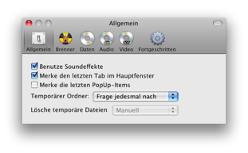
Grundlegende Einstellungen für das Burn-Interface.
Aber auch Einstellmöglichkeiten für temporäre Dateien
und wie sie behandelt werden sollen.
Brenner:
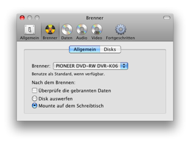
Standard Brenner und Einstellungen werden nach dem
Brennen benutzt.
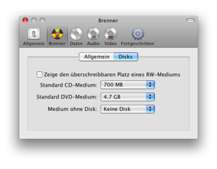
Die erste Einstellung zeigt überschreibbaren Platz im
Burn-Fenster. Die letzte Option ist in Verwendung wenn keine Disc im
Brenner eingelegt ist.
Daten:
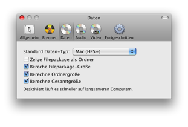
Du kannst hier das Standard-Daten-Format festlegen für den
Fall das Burn sich das letzte Popup (Generell) nicht gemerkt hat.
Filepackages sind Ordner die wie Dateien behandelt werden. Du kannst
einstellen wie Burn diese Darstellen soll. Du kannst auch eine andere
Größenanzeige auswählen. Letztere ist am meisten
Prozessor-Intensiv.
Audio:
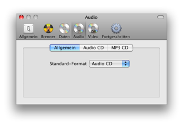
Du kannst hier das Standard-Audio-Format festlegen
für den Fall das Burn sich das letzte Popup (Generell) nicht
gemerkt hat.
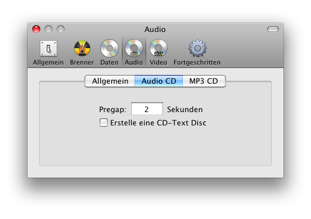
Einstellungen für eine Audio-Disc. Pregap ist die Anzahl an
Sekunden bevor ein Track beginnt. CD-Text kann zu einer Disc
hinzugefügt werden. Einige CD-Spieler können diese
Informationen nutzen um Angaben über den Track (z.b.
Künstler, Album etc) anzuzeigen. Diers muss allerdings auch vom
Brenner unterstützt werden.
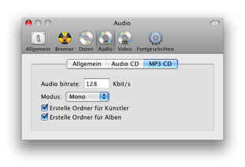
Einstellungen für eine MP3-Disc. Die Audio-Bitrate ist die Anzahl
der KBit/Sekunde die genutzt wird. Je größer dieser Wert ist
umso größer wird die Datei bzw. verbessert sich aber auch
die Qualität. Burn kann auch Ordner auf einer MP3-Disc erstellen.
Video:
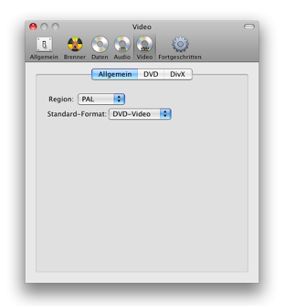
Du kannst hier das Standard-Video-Format festlegen
für den Fall das Burn sich das letzte Popup (Generell) nicht
gemerkt hat.
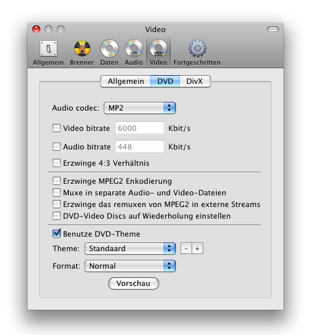
Der DVD-Tab beinhaltet Optionen um die Qualität, Größe
und das Audio-Format einzustellen. Darüberhinaus befinden sich
dort noch erweiterte Optionen die zur Erstellung von DVD-Video-Discs
sinnvoll sein können. Die letzte Sektion beinhaltet die Auswahl
eines Themes, Format 4:3 (Normal) und Weit (16:9).
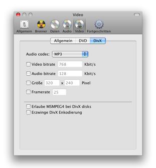
Der-Divx-Tab beinhaltet Optionen um die Qualität, Größe und das Audio-Format einzustellen. Es ist dort auch möglich MSMPEG4 zu aktivieren welches allerdings nicht auf allen DivX-Spielern wiedergegeben werden kann. Um bereits vorhandene DivX-Avi-Dateien zu konvertieren kann man eine Konvertierung erzwingen.
Fortgeschritten:
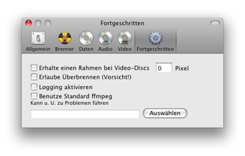
"Rahmen beibehalten" erstellt Rahmen welche helfen die
Darstellung auf Geräten die zuviel des Videos hereinzoomen
vernünftig wiederzugeben. Diese Option ist noch nicht ganz
implementiert. Es kann das Verhältnis (Ratio) noch nicht
berechnen. Überbrennen entfernt diese Warnung falls zuviel
gebrannt wird. Benutze diese Option mit Vorsicht bis klar ist das alle
Brenner dieses verarbeiten können. Logging wird meist dazu benutzt
um Probleme in Burn ausfindig zu machen. Burn benutzt ffmpeg um Video-
und Audio-Dateien zu konvertieren. Du kannst zwar deine eigene selbst
konfigurierte Version benutzen aber aufgrund von Abweichungen kann es
zu Problemen kommen. Daher ist es ratsam die eingebaute Version zu
nutzen.